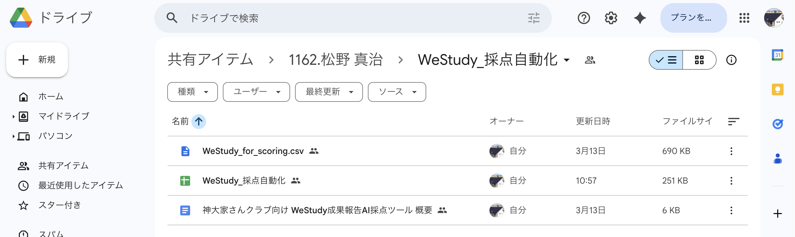
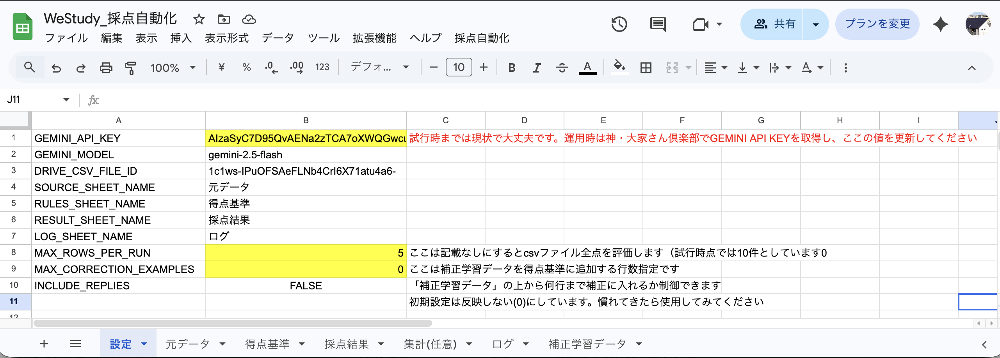
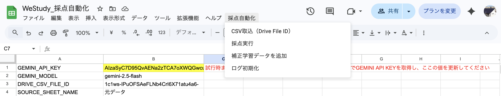
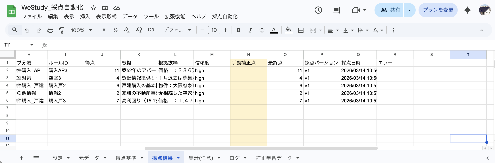
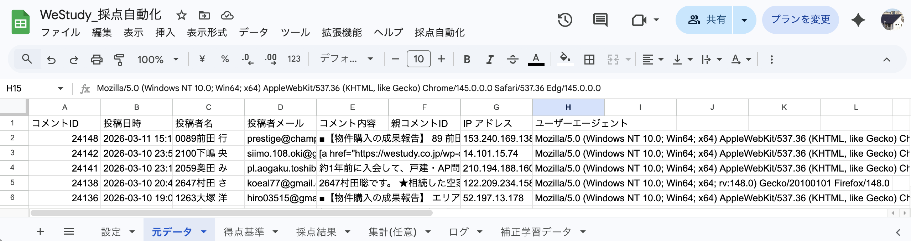

試行・本番運用の流れ
目黒さん向け
今回お渡しする成果報告 AI 採点ツールを使って、次の流れで試行をお願いします。
お渡ししたフォルダ・ファイルの構成は次のとおりです。説明が必要な場合はお知らせください。

フォルダ構成
まずスプレッドシートを開いてください。そのうえで、次の流れで操作します。
①「設定」シートで確認します。8行目のMAX_ROWS_PER_RUNは5のままで、一度動かしてみてください。

設定シート（8行目・A-B列＝MAX_ROWS_PER_RUN）
②画面上部のメニューから「採点自動化」をクリックし、「採点実行」をクリックしてください。

採点自動化メニュー
③採点結果を確認します。下記のイメージのように、5件が表示されていることを確認してください。

採点結果のイメージ（5件）
④動きを確認できたら、「設定」シートに戻り、8行目の「5」を削除して空白にしてください。
設定シート（8行目・B列を空白に）
⑤②と同じように、メニューから「採点自動化」をクリックし、「採点実行」をクリックしてください。
⑥「採点結果」シートで、全件採点されていることを確認してください。
⑦Geminiが採点した結果が、元々の意図や最初にもらった採点結果と大筋合っていることを確認してください。
採点結果シート（補正する列のイメージ）
⑧補正を行った場合は、「採点自動化」メニューの「補正学習データを追加」をクリックすると、補正した点数を加味して次回から採点するようになります。（⑦でN列「手動補正点」に補正を入れた場合のみで大丈夫です）
採点自動化メニュー（補正学習データを追加）
試行で問題がなければ、3月の集計で本番利用をお願いします。
試行の具体的な進め方と同様に進めつつ、本番で追加・注意が必要な点を中心にまとめます。
本番では、3月のCSVを取得したうえで、試行時と同じフォルダ構成に従ってファイルを準備してください。下記のフォルダ構成の図を参照し、指定のドライブにCSVファイルを配置してください。
フォルダ構成
その際、次の2点をお願いします。
（試行の「1-2」に相当する、本番用のCSV準備です。）
採点実行を行う前に、以下の2点を行ってください。
1. 画面上のメニューから「採点自動化」をクリックし、「CSV取込 (Drive File ID)」を実行してください。
採点自動化メニュー
2. 「元データ」シートが3月のデータに更新されていることを確認してください。

元データシート
以降の作業は、試行の具体的な進め方の1-3（スプレッドシートの操作）と同じ流れです。
3月までに「従来手法」と「Geminiでの評価」の比較を完了していただく想定です。